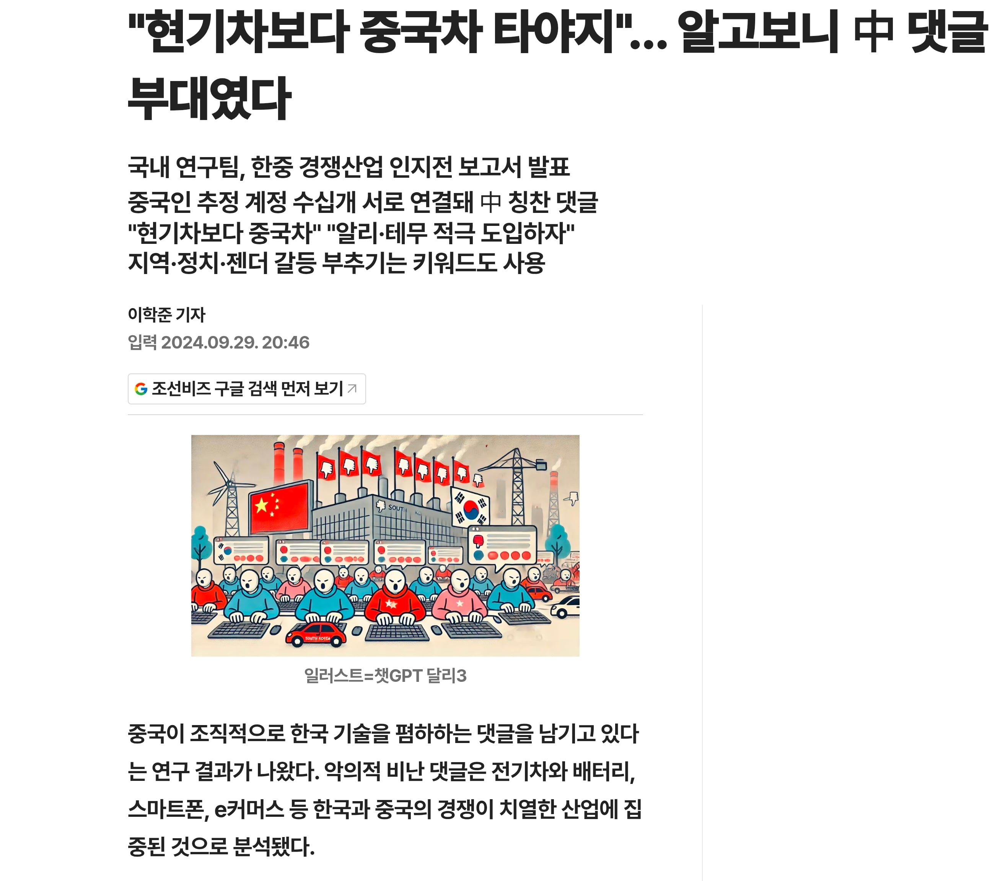
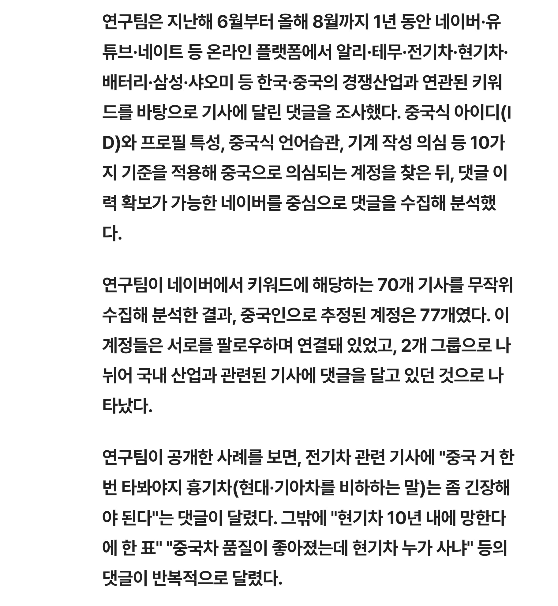

https://biz.chosun.com/topics/topics_social/2024/09/29/VLVCEDCGFFB4DMM5FDFYJK6QTA/?outputType=amp
징글징글 하다


https://biz.chosun.com/topics/topics_social/2024/09/29/VLVCEDCGFFB4DMM5FDFYJK6QTA/?outputType=amp
징글징글 하다
본토애들처럼 깽판치는 새끼들 말고 조용히 관광하고 돈이나쓰고 가는 관광객이나 많이오라는거지 뭔
쟤들은 오면 깽판치는게 기본이자너
국내 거주 인중 3%가 중국인임
가격이싸면 고민이라도 해보겠는데 그가격이면 돈좀 더주고 테슬라 타는게 나은거같음
짱혐종자라 애내들 댓글 다는거 쭉 관찰 많이 해봤었는데 걍 애내들 댓글 다는거 티 존나 나서 요샌 별 신경도 안씀
애시당초 못 배워쳐먹은 놈들이 댓글부대 하는 거라 님들 생각하는 거랑 다르게 레파토리나 하는 말투가 정해져 있음
참고로 조선족보다 한국어 배운 한족이 더 말 잘하고 그거보다 AI가 요샌 많이 올라와서 가끔 긁기도 해서 주의할 필요는 있음
현대차가 이러이러해서 별로니까 테슬라 탄다 <- ㅇㅈㅇㅈ 요즘 현기차 왜 그러냐 테슬라하고 경쟁할만한걸 좀 내놔라
현대차가 이러이러해서 별로니까 중국차 탄다 <- ???????????????
현기욕은 해도 짱차는 좀..
천안 공도에 짱차 은근 많이 돌아다님
개드립에도 많은데 뭘 ㅋㅋㅋㅋ 개드립 중뽕 덧글보면 한국은 이미 확정적으로 망했음
저거랑 별개로 현기차 독점으로 가격쳐 올리는거보면 경쟁자가 필요하긴해
'지역.정치.젠더 갈등 부추기는 키워드도 사용'
이제 ai가 여기저기 분탕댓글 엄청 쓸텐데 이거 감당 안될거같음
아닐줄 알았음.
아무리 흉기차가 좆같아도 중국차랑 비교당할 대상은 아니지
개드립에도 수상하게 중국차 미는 애들이 있더라
중국차 좋다고 하는거 보면서 나라가 망한줄 알았음 ㅋ
중국 제조업 미친 수준으로 올라와서
우리나라 어지간한 소재산업들 다 망했잖아
이때도 처음에는 병신수준의 치수, 가공오차내는 개폐급이라
다 무시하다가 10년 만에 먹힘
근데 지금 중국차 레벨을 찬양한다?
진짜 애국심 넘치는 조선족 아니고서야...
다른거보다 중국차 타고 돌아다니면 중국인 혹은 조선족으로 볼거같아서 쪽팔림 그리고 아무리 발전했다고 하도 짱꾸물건은 믿음이 안가
마 그래도 중국인들이 한국와서 돈많이쓰니 많이오라해야한다 더라